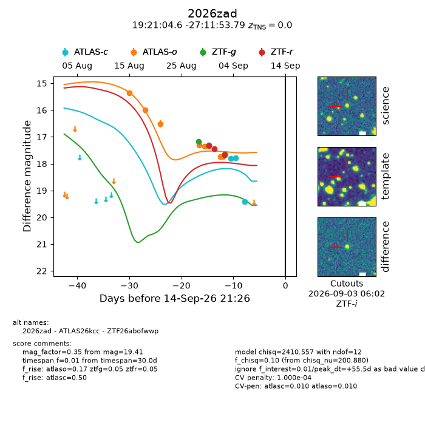
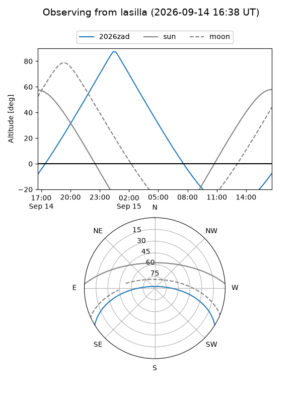
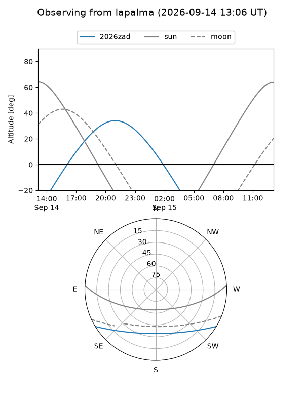
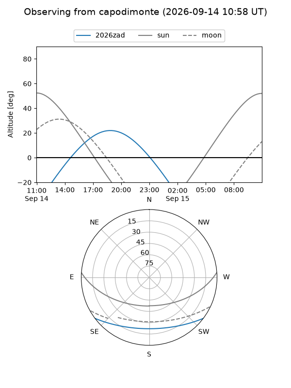
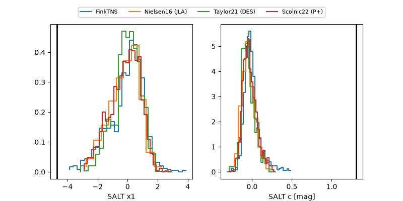

2026zad
Target 2026zad at 2026-09-14 21:27
Aliases and brokers:
FINK-ZTF: ztf.fink-portal.org/ZTF26abofwwp
Lasair-ZTF: lasair-ztf.lsst.ac.uk/objects/ZTF26abofwwp
ALeRCE-ZTF: alerce.online/object/ZTF26abofwwp
YSE-PZ: ziggy.ucolick.org/yse/transient_detail/2026zad
TNS name: wis-tns.org/object/2026zad
Direct TNS query: direct search
alt names
ZTF26abofwwp (ztf,fink_ztf)
2026zad (tns,yse)
ATLAS26kcc (atlas)
Coordinates:
equatorial (ra, dec) = 290.2693,-27.19827
equatorial (HMS+DMS) = 19:21:04.64,-27:11:53.79
galactic (l, b) = (11.0363,-18.08963)
Flags:
TNS type: CV
TNS redshift: 0.0000
peak dt: +55.5
likely cv: !!
Photometry:
last atlasc=19.41, atlaso=17.74, ztfg=17.64, ztfr=17.67
3 atlasc, 7 atlaso, 3 ztfg, 3 ztfr detections
Lightcurve

Visibility



Additional plots
